9장 여러 모평균의 가설검정
9.2 표본추출을 위한 실험계획
9.3 두 인자 분산분석
[9장 pdf]
이 장에서는 여러 모집단 모수를 비교하는 가설검정에 대하여 설명한다.
- 한 인자 여러 모평균 가설검정
- 한 인자 여러 모평균 가설검정을 실험의 계획 : 완전임의배치법, 확률화블록계획법
- 두 인자 여러 모평균 가설검정
9.1 한 인자 분산분석
8.1절에서는 두 모집단의 평균 비교를 검정을 이용하여 하는 방법에 대해 알아보았다. 이 장에서는 이를 확장하여 여러 모집단의 평균을 비교하는 방법을 살펴본다. 현실에서는 여러 모집단의 평균을 비교하는 예가 많다.
- 어느 대학에서 각 학년별 도서관 평균이용시간이 같은가?
- 세 가지 다른 품종의 벼의 수확량이 같은가?
- 어떤 화학반응에서 네 가지 다른 온도에서 반응속도가 같은가?
- 도시별 대졸자의 월평균 임금이 같은가?
도서관 이용시간과 같이 실제로 그 값이 관측되는 변량을 분석변량 또는 반응변량(response variable)이라 한다.
그리고 학년과 같이 모집단의 그룹을 구분하는데 사용되는 변량을 그룹 또는 인자(factor)라고 하는데 대부분
이산형 변량이다. 인자가 가지는 값들을 인자의 수준(level)이라고 하며, 이들 수준의 개수가 비교되는 모집단의 개수가 된다.
이와 같이 하나의 인자가 반응변량에 미치는 영향을 조사하는 분산분석법을 일원분산분석(one-way ANOVA)이라 한다.
표 9.1은 일원분산분석에서 수준의 개수가 \(k\)개이고 각 수준에서의 관측값이 각각 \(n_1 , n_2, ... , n_k\) 개 있는
경우의 일반적인 자료구조를 보여준다.
표 9.1 일원분산분석의 자료구조와 기호
| 인자 |
관측값 |
평균 |
| 수준 1 | \(Y_{11} \; Y_{12}\; \cdots \;Y_{1n_1} \) | \(\overline Y_{1\cdot}\) |
| 수준 2 | \(Y_{21} \; Y_{22}\; \cdots \;Y_{2n_2} \) | \(\overline Y_{2\cdot}\) |
| \(\cdots\) | \(\cdots\) | \(\cdots\) |
| 수준 k | \(Y_{k1} \; Y_{k2}\; \cdots \;Y_{kn_k} \) | \(\overline Y_{k\cdot}\) |
| | 전체평균 \(\overline Y_{\cdot \cdot}\) |
검정하고자하는 가설은 각 수준의 모평균 \(\mu_i\)가 같은지 비교하는 것이다.
귀무가설 \(\qquad \quad H_0\): \(\mu_1 = \mu_2 = \cdots = \mu_k\)
대립가설 \(\qquad \quad H_1\): 적어도 한 쌍의 \(\mu_i\)가 같지 않다.
여러 개의 모평균이 차이가 있는지 검정하는 상식적인 측도는 각 수준에서 전체평균까지의 거리일 것이다. 즉, 전체 표본평균을
\(\overline Y_{\cdot \cdot}\)로 나타내면 각각의 표본평균에서 전체평균까지의 거리는 표본의 개수를 가중치로 하였을 때
다음과 같다. 이를 처리 제곱합(treatment sum of squares; SSTr) 또는 급간제곱합
(between sum of squares; SSB)이라 부른다.
\(\small SSTr = n_1 (\overline y_{1 \cdot} - {\overline y}_{\cdot \cdot})^2 + n_2 (\overline y_{2 \cdot} - {\overline y}_{\cdot \cdot})^2 + \cdots + n_k(\overline y_{k \cdot} - {\overline y}_{\cdot \cdot})^2 \)
이 처리제곱합이 0에 가까우면 모평균에 차이가 없다는 귀무가설이 채택된다.
검정을 위한 통계량을 위해 각 수준 내에서의 수준 평균과의 제곱거리를 오차제곱합(error sum of squares; SSE)이라
하고 다음과 같이 정의한다. 급내제곱합(within sum of squares; SSW)이라고도 부른다.
\(\small SSE = (y_{11} -{\overline y}_{1 \cdot})^2 + (y_{12} -{\overline y}_{1 \cdot})^2 + \cdots + (y_{1 n_1} -{\overline y}_{1 \cdot})^2\)
\(\small \qquad \quad + (y_{21} -{\overline y}_{2 \cdot})^2 + (y_{22} -{\overline y}_{2 \cdot})^2 + \cdots + (y_{2n_2} -{\overline y}_{2 \cdot})^2\)
\(\small \qquad \quad + \cdots \)
\(\small \qquad \quad + (y_{k1} -{\overline y}_{k \cdot})^2 + (y_{k2} -{\overline y}_{k \cdot})^2 + \cdots + (y_{kn_k} -{\overline y}_{k \cdot})^2\)
만일 각 수준의 모집단이 정규분포를 따르고 모분산이 모두 같다고 가정하면 급간의 분산 \(\frac{SSTr}{k-1}\)
(급간평균제곱합; MSTr)을 급내분산 \(\frac{SSE}{n-k}\) (급내평균제곱합, 또는 오차평균제곱합; MSE)으로 나눈 검정통계량
$$
F_{0} = \frac { \frac{SSTr}{(k-1)} } { \frac{SSE}{(n-k)} }
$$
은 \(F_{k-1; n-k}\) 분포를 따른다. 즉 검정통계량이 0에 가까우면 귀무가설이 채택되고, 많이 크면 귀무가설이 기각되게 된다.
위의 복잡한 검정통계량을 표 9.2와 같은 분산분석표(ANOVA table)로 정리할 수 있다.
표 9.2 분산분석표
| 요인 |
제곱합 |
자유도 |
평균제곱합 |
F 값 |
| 처리 (급간) |
SSTr |
\(k-1\) |
MSTr=\(\frac{SSTr}{k-1}\) |
\(F_0 = \frac{MSTr}{MSE}\) |
| 오차 (급내) |
SSE |
\(n-k\) |
MSE=\(\frac{SSE}{n-k}\) |
|
| 전체 |
SST |
\(n-1\) |
|
|
\(\qquad n = \sum_{i=1}^{n} \; n_i\)
일원분산분석을 위한 통계모형은 다음과 같이 주어진다.
$$
\begin{align}
Y_{ij} &= \mu_i + \epsilon_{ij} \\
&= \mu + \alpha_i + \epsilon_{ij}, i=1,2,...,k; j=1,2,..., n_i \\
\end{align}
$$
위에서 \(Y_{ij}\)는 반응변량 \(Y\)의 \(i\)번째 수준에서의 \(j\)번째 관측값을 나타낸다. 이 모형에서는
\(i\)번째 수준에서의 \(Y\)의 모평균 \(\mu_i\)를 \(\mu +\alpha_i\)로 나타내었는데 여기에서
\(\mu\)는 \(Y\)의 전체 모평균을 나타내며, \(\alpha_i\)는 \(\mu_i -\mu\)로 이를 반응변량에 대한
\(i\)번째 수준의 효과(effect)라 한다. 오차항 \(\epsilon_{ij}\)는 서로 독립이며, 평균이 0 이고
분산이 \(\sigma^2\)인 정규분포를 따른다고 가정한다.
오차항 \(\epsilon_{ij}\)는 수준간의 차이가 아닌 다른 요인에 기인하는 반응변량의 변동을 나타내는 확률변량이다.
검정하고자하는 가설은 \(\mu_i\)대신에 \(\alpha_i\)를 사용하면 아래와 같다.
귀무가설 \(\qquad \quad H_0\): \(\alpha_1 = \alpha_2 = \cdots = \alpha_k\) = 0
대립가설 \(\qquad \quad H_1\): 적어도 하나의 \(\alpha_i\)는 0이 아니다.
🎲 예 9.1
어느 대학교에서 학년별 영어 실력을 비교하기 위하여 각 학년에서 무작위로 표본을 추출하여 같은 영어 시험을 보게
한 결과 표 9.3의 자료를 얻었다. 우측 열은 각 학년별 평균을 계산한 것이다. 각 학년별 영어 점수의 각 학년별 영어 점수의 평균이 같은지 5％ 유의수준으로 『eStatU』를 이용하여 가설검정 하자.
표 9.3 학년별 영어 성적
| 학년 |
학생 1 |
학생 2 |
학생 3 |
학생 4 |
학생 5 |
학생 6 |
평균 |
| 1학년 |
81 |
75 |
69 |
90 |
72 |
83 |
\({\overline y}_{1\cdot}\)=78.3 |
| 2학년 |
65 |
80 |
73 |
79 |
81 |
69 |
\({\overline y}_{2\cdot}\)=74.5 |
| 3학년 |
72 |
67 |
62 |
76 |
80 |
|
\({\overline y}_{3\cdot}\)=71.4 |
| 4학년 |
89 |
94 |
79 |
88 |
|
|
\({\overline y}_{4\cdot}\)=87.5 |
[Ex] ⇨ eBook ⇨ EX090101_EnglishScoreByGrade.csv.
풀이
『eStatU』에서 ‘가설검정 : 분산분석’을 선택하면 [그림 9.1]과 같은 화면이 나타난다. 여기에서 유의수준을 선택하고, 표본자료를 입력하고 [실행] 버튼을 누르면 [그림 9.2]와 같이 각 학년 모평균에 대한 가설검정 결과가 나타난다.
[Testing Hypothesis : 3+ Population Means (ANOVA)]
[그림 9.2] 『eStatU』를 이용한 분산분석 결과
『eStat』을 이용하여 분산분석을 할 수 있다.
🎲 예 9.2
[예 9.1]을 『eStat』을 이용하여 분산분석 하자.
풀이
『eStat』에서 시트에 [그림 9.3] 같이 데이터를 입력하고 변량명을 ‘학년’과 ‘영어점수’로 설정한다.
『eStat』 주메뉴의 분산분석 아이콘을 클릭하여 나타나는 변량선택박스에서 ‘분석변량’을 영어점수, ‘by 그룹’을 학년으로 선택하면 [그림 9.4]와 같이 학년별 영어점수의 점그래프와 95% 신뢰구간이 표시된다.
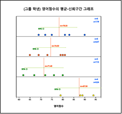
[그림 9.4] 영어성적 자료의 점그래프와 평균의 95% 신뢰구간 그래프
데이터의 정규성 여부를 검토하기 위해서는 이 그래프 밑의 선택사항([그림 9.5])에서 ‘히스토그램’ 버튼을 누르면 [그림 9.6]과 같이 히스토그램과 정규분포가 같이 그려진다.
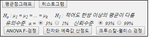
[그림 9.5] 분산분석 선택사항
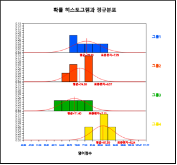
[그림 9.6] 각 학년별 히스토그램과 정규분포 그림
[그림 9.5]의 분산분석 선택사항에서 유의수준 5%와 신뢰수준 95%를 선택하고 [ANOVA F 검정] 버튼을 누르면 [그림 9.7]과 같이 F분포에서 검정통계량의 위치를 보여주는 그래프가 나타나고, 결과창에는 [그림 9.8]과 같은 각 학년별 평균 및 신뢰구간 표와 검정결과가 나타난다.
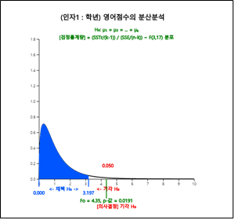
[그림 9.7] 『eStat』의 ANOVA F 검정 그래프
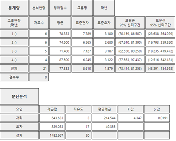
[그림 9.8] 『eStat』의 기초통계량과 분산분석표
다중비교
평균들에 대한 F 검정에서 인자의 각 수준간의 차이가 나타나지 않는 경우에는 차이가 없다고 결론을 내리거나, 아니면 수준간의 차이를 찾기 위한 다른 실험을 시도 할 수 있다. 그러나 [예 9.1]과 같이 각 수준간의 차이가 있다는 결론을 얻은 경우에는 그 차이가 어느 수준간에서 나타나는지 살펴볼 필요가 있다.
분산분석 후의 평균 차이에 관한 분석에서는 평균차의 검정을 두 개 이상 동시에 하여야 하는데, 이때 사용하는 통계적 검정방법을
다중비교(multiple comparison)라 하며 여러 가지 다중비교방법들 중에서 Tukey의 HSD검정
(honestly significant difference test)이 가장 많이 이용된다. 평균 \(\mu_i\)와 \(\mu_j\)에 대한
Tukey의 HSD검정에서는 먼저
$$
HSD_{ij} = q_{k,n-k; α} \cdot \sqrt{\frac{1}{2} ( \frac{1}{n_i } + \frac{1}{n_j} ) MSE }
$$
를 계산하여 표본평균들이 부등식
\(|{\overline y}_{i\cdot} - {\overline y}_{j\cdot} | > HSD_{ij}\)
를 만족하면 가설 \(H_0 : \mu_i = \mu_j\)를 기각하여 \(\mu_i\)와 \(\mu_j\)는 유의수준 \(\alpha\)하에서 다르다고 결정한다.
위의 식에서 \(n_i\)와 \(n_j\)는 \(i\)와 \(j\)수준에서의 반복수, MSE는 오차평균제곱합이다. 그리고 \(q_{k,n-k; α}\)는
모수 \(k\)와 자유도 \(n-k\)를 갖는 표준화범위분포(studentized range distribution)의 우측 100 \(\alpha\)%
백분위수로 『eStatU』에 ‘HSD 표준화범위분포’에 수록되어 있다([그림 9.9]).
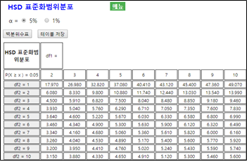
[그림 9.9] 『eStatU』HSD 분포표
🎲 예 9.3
[예 9.1] 학년별 영어 성적자료에 대한 분산분석에서는 귀무가설을 기각하여 각 학년의 영어평균성적이 모두 같은 것은 아니라는 결론을 얻었다. 이제 차이가 어느 학년간에 존재하는지를 유의수준 5％로 각 학년간의 평균을 『eStat』을 이용하여 다중비교하여 보자.
풀이
[그림 9.5]의 분산분석 선택사항 창에서 ‘다중비교’를 선택하면 [그림 9.10]과 같은 Tukey의 다중비교 결과를 보여준다. 『eStat』에서는 표본평균 조합에 대한 평균차와 95% HSD 값을 보여준다. 이어서 표본평균들의 크기 순서대로 각 수준을 행과 열에 나열하여 두 수준들의 조합에 대해 검정 결과가 유의수준 5％로 유의하면 * 표시를 하고, 유의수준 1%로 유의하면 ** 표시, 유의하지 않으면 빈칸으로 남겨둔다.
잔차분석
분산분석과 관련된 또 하나의 통계적 분석은 잔차분석(residual analysis)이다. 분산분석에서의 각종 가설검정은
오차항 \(\epsilon_{ij}\)에 대한 가정이 성립한다는 조건하에서 이루어진다. 오차항에 대한 가정에는
독립성 (\(\epsilon_{ij}\)들은 서로 독립), 등분산성 (각 \(\epsilon_{ij}\)의 분산은 \(\sigma^2\)으로 일정),
정규성 (각 \(\epsilon_{ij}\)는 정규분포) 등이 있는데, 분석의 정확성을 위해 항상 이들 가정들의 타당성을 조사하여야 한다.
그러나 \(\epsilon_{ij}\)는 관측될 수 없기 때문에 이들의 추정치인 잔차(residual)를 계산하여 이용한다. 분산분석에서의 잔차는
항상 오차제곱합의 공식에 사용되는 편차로 정의되는데, 이를테면, 일원분산분석에서는 \(Y_{ij} - {\overline Y}_{i\cdot} \)이다.
🎲 예 9.4
[예 9.1]의 학년별 영어성적 비교에 대한 잔차분석을 하여 보자.
풀이
[그림 9.5]의 분산분석 선택사항 창에서 ‘잔차와 예측값 산점도’를 클릭하면 [그림 9.11]과 같은 잔차 대 예측치의 산점도가 나타난다. 이 산점도에서는 잔차들이 0을 중심으로 특이한 경향을 보이지 않고 랜덤하게 나타나면 각 가정이 타당함을 의미한다. 이 산점도에서는 특이한 경향이 나타나지 않는다.
9.2 표본추출을 위한 실험계획
[예 9.1]의 학년별 영어 성적과 같은 데이터는 각 학년 모집단에 대한 자료를 얻기가 가능하고, 여기서 학년별로 여러 개의 표본을 임의 추출하는 것은 그리 어렵지 않다. 그러나 공학이나 의학, 농학 등의 실험을 통해 각 인자의 수준별로 표본 데이터를 얻을 때 실험 시간이 길 수도 있고 다른 외부 요인의 영향을 받아 표본의 수를 많이 추출하기 어려운 경우가 많아 표본의 추출에 주의하여야 한다.
완전확률화계획법
한 인자의 각 수준 간에 존재할 수 있는 차이를 정확하게 파악하기 위해서는 다른 인자들의 영향을 될 수 있는 대로 적게
해 주는 것이 좋다. 이를 위한 방법 중의 하나는 실험전체를 랜덤(random)하게 하는 것이다. 예를 들어, 세 종류의
자동차(A, B, C)의 1리터당 주행거리(연비)를 비교하는 문제를 생각해 보자. 각 종류의 자동차 5대에 대해 연비를
측정하고자 한다. 한 운전자가 모든 15대의 차를 운전해 실험해 볼 수도 있다. 하지만 하루에 5대밖에 측정할 수 없다면
총 3일에 걸쳐서 측정을 하게 된다. 이 경우 매일 날씨나 풍속, 풍향 등이 달라 질 수 있어 측정된 값이 날씨에 영향을
받게 되고 각 날짜에 어느 자동차 종류의 연비를 측정해야 되는지 문제가 된다.
하루에 모든 차의 연비를 측정하기 위하여 다섯 명의 운전자(1, 2, 3, 4, 5)가 차를 운전하려고 계획을 세웠다면
자동차의 연비는 운전자에 따라 영향을 받을 수 있는 문제가 발생한다. 한 가지 해결 방법은 15대의 차를 5명의
운전자에게 랜덤하게 3대씩 배정한 후 실험의 순서 역시 랜덤하게 하면 된다. 즉, 각 차에 1번부터 15번까지의 번호를
부여한 다음, 제비뽑기나 난수표를 사용하여 나오는 번호순서대로 연비측정 실험을 한다. 이와 같이 실험하면 운전자,
풍속, 풍향 등 외부 요인에 의한 변동이 전체 관측값에 균등하게 영향을 미치어 이 요인들로 인하여 인자의 수준 간에
차이가 발생할 가능성이 줄어든다. 이와 같은 실험방법을 완전확률화계획법(completely randomized design)
이라 부른다. 표 9.4는 이 방법에 의한 배정의 한 예를 보여준다. 기호 A, B, C는 세 회사 자동차를 나타낸다.
표 9.4 완전확률화 실험의 예
| 운전자 | 1 | 2 | 3 | 4 | 5 |
| 자동차 | B | A | B | C | A |
| | B | C | A | A | C |
| | C | B | A | B | C |
일반적으로 분산분석을 이용하는 문제에 있어서는 분석의 목적을 제대로 달성하기 위하여 자료를 얻기 위한
실험을 사전에 철저히 계획할 필요가 있는데, 위의 완전확률화계획법과 같은 실험방법은 통계학의 한 분야인
실험계획법(design of experiment)에서 다룬다. 실험계획의 관점에서 볼 때 일원분산분석법을
일원배치법(oneway layout)이라고 부른다.
확률화블록계획법
위에서 예로 들은 자동차 연비실험에서는 완전확률화계획법으로 15대의 자동차를 5명의 운전자에게 랜덤하게 배정하였다. 하지만 표 9.4의
한 배정 결과는 이와 같은 완전확률화계획법의 단점을 보여준다. 이를 테면, 운전자 1은 B와 C 회사차만, 운전자 3은 A와 B 회사차만
실험하게 되어 운전자간의 변동이 오차항에 평균화되어 포함되지를 못한다. 그러므로 운전자간의 변동이 심한 경우 오차항은 단순한
실험오차가 아닐 수 있다. 이러한 단점을 없애기 위해 각 운전자가 각 회사차를 적어도 한번씩 실험하도록 할 수 있는데 이와 같은
실험방법을 확률화블록계획법(randomized block design)이라 한다. 표 9.5는 이 경우 가능한 배정의 한 예를 보여준다.
이 표에서 괄호안의 값은 관측된 연비의 값이다.
표 9.5 확률화블록계획법의 예
| 운전자 | 1 | 2 | 3 | 4 | 5 |
자동차
(연비) | A(22.4) | B(12.6) | C(18.7) | A(21.1) | A(24.5) |
| C(20.2) | C(15.2) | A(19.7) | B(17.8) | C(23.8) |
| B(16.3) | A(16.1) | B(15.9) | C(18.9) | B(21.0) |
표 9.5에서 전체 관측값들을 운전자에 따라 5개의 집합으로 나누는 것과 같이 동일한 성질을 갖도록 나눈 것을 블록(block)이라
하고, 운전자와 같이 블록을 나타내는 변량을 블록변량(block variable)이라 한다. 블록은 일반적으로 인자 외의 다른 요인에
의한 변동이 심할 경우 사용된다. 예를 들어, 벼품종에 따른 수확량을 조사할 때 실험에 사용되는 논의 지력이 일정하지 않은 경우에는
우선 지력이 일정하도록 몇 개의 구획(블록)을 만든 후 각 구획에 모든 품종의 벼를 심는다. 이와 같이 하면 지력의 차가 심한 경우에도
그로 인한 변동을 제거할 수 있으므로 벼품종간의 수확량 차이에 대해 더욱 정확하게 조사할 수 있다.
확률화블록계획법에서 블록이 b개 있는 경우의 통계적 모형은 다음과 같이 나타낼 수 있다.
$$
Y_{ij} = \mu + \alpha_i + B_j + \epsilon_{ij}, \quad i=1,2, ... ,k, \; j=1,2, ... ,b
$$
이 식에서 \(B_j\)는 블록변량의 \(i\) 번째 수준의 반응변량에 대한 영향력을 나타낸다. 확률화블록계획법에서는 블록변량의 각 수준간의 차이에 기인하는 변동을 인자의 변동과는 독립적으로 오차항에서 분리시킬 수 있다. 이 계획법에서의 총편차는 다음과 같이 분할된다.
$$
Y_{ij} - {\overline Y}_{\cdot \cdot} = (Y_{ij} - {\overline Y}_{i \cdot} - {\overline Y}_{\cdot j} + {\overline Y}_{\cdot \cdot}) + ({\overline Y}_{i \cdot} - {\overline Y}_{\cdot \cdot}) +({\overline Y}_{\cdot j} - {\overline Y}_{\cdot \cdot})
$$
위 식의 양변을 제곱한 다음 모든 \(i, j\)에 대해 합하면 일원분산분석에서와 같이 여러 가지의 제곱합을 얻을 수 있다. 즉,
총제곱합 (Total sum of squares) : 자유도 ; \(bk - 1\)
SST = \(\sum_{i=1}^{k} \sum_{j=1}^{b} ( Y_{ij} - {\overline Y}_{\cdot \cdot} )^2 \)
오차제곱합 (Error sum of squares) : 자유도 ; \((b-1)(k-1)\)
SSE = \(\sum_{i=1}^{k} \sum_{j=1}^{b} ( {Y}_{ij} - {\overline Y}_{i \cdot} - {\overline Y}_{\cdot j} + {\overline Y}_{\cdot \cdot})^2 \)
처리제곱합 (Treatment sum of squares) : 자유도 ; \(k - 1\)
SSTr = \(\sum_{i=1}^{k} \sum_{j=1}^{b} ( {\overline Y}_{i \cdot} - {\overline Y}_{\cdot \cdot} )^2 \)
= \(b\sum_{i=1}^{k} ( {\overline Y}_{i \cdot} - {\overline Y}_{\cdot \cdot} )^2 \)
블록제곱합 (Block sum of squares) : 자유도 ; \(b - 1\)
SSB = \(\sum_{i=1}^{k} \sum_{j=1}^{b} ( {\overline Y}_{\cdot j} - {\overline Y}_{\cdot \cdot} )^2 \)
= \(k \sum_{j=1}^{b} ( {\overline Y}_{\cdot j} - {\overline Y}_{\cdot \cdot} )^2 \)
확률화블록계획법에서는 항상 다음과 같이 제곱합과 자유도가 분할된다.
제곱합 : SST = SSE + SSTr + SSB
자유도 : \(bk -1 = (b-1)(k-1) + (k-1) + (b-1) \)
표 9.6은 확률화블록계획법에서의 분산분석표를 보여준다. 이 분산분석표에서 블록요인과 오차요인의 제곱합과 자유도를 합쳐 새로운 오차항의 제곱합과 자유도로 생각하면 일원분산분석의 표와 같아짐을 알 수 있다.
표 9.6 확률화블록계획법의 분산분석표
| 요인 |
제곱합 |
자유도 |
평균제곱합 |
F 값 |
| 처리 |
SSTr |
\(k-1\) |
MSTr=\(\frac{SSTr}{k-1}\) |
\(F_0 = \frac{MSTr}{MSE}\) |
| 블록 |
SSB |
\(b-1\) |
MSB=\(\frac{SSB}{b-1}\) |
|
| 오차 |
SSE |
\((b-1)(k-1)\) |
MSE=\(\frac{SSE}{(b-1)(k-1)}\) |
|
| 전체 |
SST |
\(bk-1\) |
|
|
확률화블록계획법에서는 완전확률화계획법과는 달리 전체 실험을 랜덤하게 하지 않고 각 블록안에서만 실험을 랜덤하게 하면 된다. 확률화블록계획법에서 또 유의할 점은 블록변량의 변동을 오차항에서 분리시켰지만 주관심은 일원분산분석에서와 마찬가지로 한 인자의 수준간의 차에 대한 검정이라는 것이다. 블록변량은 오차제곱합을 감소시켜 인자의 수준간의 차에 대한 검정을 더욱 정확하게 하기 위해 사용되는 것이므로 그 수준간의 차에 대한 검정은 중요하지 않다. 또한, 일원분산분석의 오차제곱합에서 블록제곱합이 분리되었으므로 오차제곱합은 감소되지만 자유도 역시 감소하므로 오차평균제곱합(MSE)이 항상 감소하는 것은 아니다.
🎲 예 9.5
표 9.7은 세 종류의 자동차(A, B, C)를 다섯 명의 운전자가 측정한 연비 데이터([표 9.3]_를 회사와 운전자에 따라서 정리해 적은 것이다.
표 9.7 세 회사 자동차의 연비
| 운전자 | 1 | 2 | 3 | 4 | 5 | 평균(\(\overline y_{i \cdot}\)) |
| 자동차 A | 22.4 | 16.1 | 19.7 | 21.1 | 24.5 | 20.76 |
| 자동차 B | 16.3 | 12.6 | 15.9 | 17.8 | 21.0 | 16.72 |
| 자동차 C | 20.2 | 15.2 | 18.7 | 18.9 | 23.8 | 19.36 |
| 평균(\(\overline y_{\cdot j}\)) | 19.63 | 14.63 | 18.10 | 19.27 | 23.10 | 18.947 |
[Ex] ⇨ eBook ⇨ EX090201_GasMilage.csv
1) 이 데이터가 완전확률화계획법에 의해 측정되었다고 가정할 때 『eStat』을 이용하여 세 회사 자동차의 연비가 같은지에 대한 분산분석을 하라.
2) 이 데이터가 확률화블록계획법에 의해 측정되었다고 가정할 때 『eStat』을 이용하여 세 회사 자동차의 연비가 같은지에 대한 분산분석을 하라.[예 9.1]을 『eStat』을 이용하여 분산분석 하자.
풀이
1) 『eStat』에서 [그림 9.12]와 같이 데이터 입력을 하고 분산분석 아이콘을 클릭하여 나타나는 변량선택창에서 ‘분석변량’을 연비, ‘by 그룹’을 자동차로 선택하면 [그림 9.13]과 같은 각 자동차별 평균-신뢰구간 그래프가 나타난다.
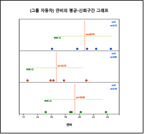
[그림 9.13] 각 자동차별 평균-신뢰구간 그래프
그래프 밑의 선택사항에서 ‘ANOVA F 검정’ 버튼을 클릭하면 [그림 9.14]의 분산분석 그래프와 [그림 9.15]와 같은 분산분석표가
나타난다. 분산분석의 결과는 각 회사 자동차간에 연비의 차가 없다는 것이다. [그림 9.16]의 다중비교 결과도 마찬가지이다.
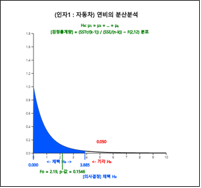
[그림 9.14] 각 자동차별 연비에 대한 분산분석
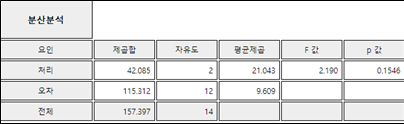
[그림 9.15] 각 자동차별 연비에 대한 분산분석
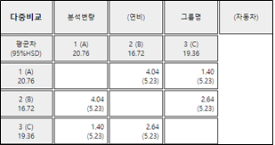
[그림 9.16] 각 자동차별 연비에 대한 다중비교
2) 이 데이터가 확률화블록계획법으로 추출되었다면 오차제곱합에서 블록제곱합을 분리하여야 한다. 『eStat』의 변량선택창에서 ‘by 그룹’에 운전자를 추가하면 [그림 9.17]과 같은 각 자동차 종류에 대해 운전자별 연비를 볼 수 있는 산점도가 나타난다. 이 산점도를 보면 운전자별 연비가 많이 차이가 있음을 볼 수 있다.
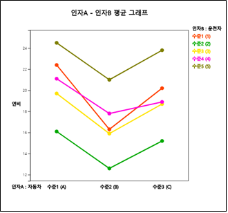
[그림 9.17] 자동차와 운전자에 대한 연비 산점도
그래프 밑의 선택사항에서 [ANOVA F 검정] 버튼을 클릭하면 [그림 9.18]과 같은 평균표와 [그림 9.19]와 같은 분산분석표가
나타난다. 이 분산분석표를 보면 오차제곱합의 감소가 뚜렷하게 나타나고 오차의 평균제곱합도 크게 감소되었다. 이는 운전자간의
큰 변동이 오차항에서 분리되었기 때문이다. 인자 B(운전자)가 블록에 대한 제곱합을 분리해 낸 것인데 p-값을 보면 매우 작아
블록(운전자) 효과가 통계적으로 의미 있는 것을 알 수 있다.
인자 A(자동차 종류)별 연비에 대한 가설 \(\small H_0 : \alpha_1 = \alpha_2 = \alpha_3 = 0\) 을 위한 값이
43.447로 \(\small F_{2,8,0.05}\) = 4.46 보다 크므로 \(\small H_0\)를 유의수준 0.05하에서 기각할 수 있다.
결론적으로, 오차항에서 블록의 변동을 제거함으로써 각 제품 간의 유의한 차이를 찾아낼 수 있다.
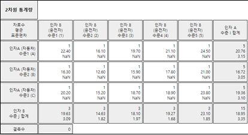
[그림 9.18] 각 수준별 평균 (표준편차는 계산이 불가하여 NaN 표시)
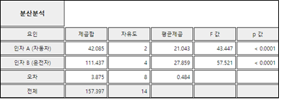
[그림 9.19] 확률화블록계획법에 대한 분산분석표
평균값으로 보면 A 회사의 자동차가 연비가 가장 좋다고 할 수 있다. 다른 회사 자동차와의 차이를 더 자세히 알아보기 위해 앞 절의 다중비교방법을 적용하여보자. 이 예에서는 각 수준에서의 반복수가 같으므로 모든 평균비교에 하나의 HSD값을 사용할 수 있다. 즉,
\(\quad \small HSD = q_{3,8; 0.05} \sqrt {\frac{MSE}{r}} = (4.041) \sqrt{\frac{0.484}{5}} \) = 1.257
따라서 각 평균값의 차이(4.04, 1.40, 2.64)가 기준값 1.257보다 모두 크므로 세 회사 자동차 간에 모두 유의한 연비의 차이가 있다고 할 수 있다.
『eStatU』를 이용하여 확률화블록계획 데이터를 분석할 수도 있다. 메뉴에서 ’가설검정 : 분산분석 : 확률화블록계획’을 선택하여
다음과 같이 데이터를 입력한 후 [실행] 버튼을 클릭하면 [그림 9.17]과 같은 블록별 선그림과 분산분석표가 나타난다.
[ - ]
[그림 9.20] 『eStatU』확률화블록계획 데이터 입력
라틴방격법 (Latin Square Design)
앞 절에서 설명한 연비 측정을 위한 확률화블록계획 실험은 운전자라는 하나의 외부 블록요인이 있었다. 하지만 자동차 연비실험을 할 경우
운전자뿐만 아니라 도로 상태와 같은 추가 블록요인이 있을 수 있다. 이 경우 두 블록변수의 변이도를 잔차에서 분리하고 제거하는
실험설계가 필요한데
라틴방격법(Latin square design)이 한 설계방법이다.
라틴방격법은 정사각형의 열에 첫 번째 블록변수를 할당하고, 행에 두 번째 블록변수를 할당한다. 그 다음 각 처리별 실험이 각 행과
각 열에서 한 번만 시행하는 방식으로 실험한다. 따라서 행 수, 열 수 및 처리 수는 모두 동일하다. 표 9.8은 3개의 행, 3개의 열 및
대문자 A, B, C로 지정된 3개의 처리가 있는 3 × 3의 전형적인 라틴방격법 실험계획의 예이다.
표 9.8 세 명의 운전자와 세 개의 도로 상태가 있을 때 세 종류의 차 (A, B, C)에 대한 연비실험의 라틴방격 실험설계
| 열 1 (도로 1) | 열 2 (도로 2 | 열 3 (도로 3) |
| 행 1 (운전자 1) | A | B | C |
| 행 2 (운전자 2) | B | C | A |
| 행 3 (운전자 3) | C | A | B |
표 9.9는 4개의 행, 4개의 열 및 대문자 A, B, C, D로 지정된 4개의 처리가 있는 4 × 4의 전형적인 라틴방격법 실험계획의 예이다.
표 9.9 네 명의 운전자와 네 개의 도로 상태가 있을 때 네 종류의 차 (A, B, C, D)에 대한 연비실험의 라틴방격 실험설계
| 열 1 (도로 1) | 열 2 (도로 2 | 열 3 (도로 3) | 열 4 (도로 4) |
| 행 1 (운전자 1) | A | B | C | D |
| 행 2 (운전자 2) | B | C | D | A |
| 행 3 (운전자 3) | C | D | A | B |
| 행 4 (운전자 4) | D | A | B | C |
라틴방격 실험계획에서 차종은 각 행, 각 열에 한 번씩만 발생하도록 무작위로 배정한다. 따라서 여러 형태의 3 × 3 및 4 × 4 라틴방격 실험계획이 가능하다. 해당 차원의 가능한 모든 라틴방격 실험계획에서 무작위로 한 설계를 선택하여 무작위화를 얻는다.
라틴방격 실험계획에서 행, 열, 처리의 수준수가 적으면 평균제곱오차의 자유도가 적게 되므로 일반적으로 최소 5 × 5 크기를 권장한다. .
\(r\)개의 처리 수준이 있는 라틴방격 실험계획의 가설은 다음과 같다.
\(\qquad\) 귀무가설 : \(\quad H_{0} : \mu_{1} = \mu_{2} = \cdots = \mu_{r} \)
\(\qquad\) 대립가설 : \(\quad H_{1} : \) 적어도 한 쌍 이상의 \(\mu_i \) 가 같지 않다.
\(r × r \) 라틴방격 실험계획의 통계적 모형은 다음과 같다.
$$
Y_{ijk} = \mu + \alpha_i + \beta_j + \gamma_k + \epsilon_{ijk}, \quad i=1,2, ... ,r, \; j=1,2, ... ,r, \; k=1,2, ... , r
$$
여기서 \(\mu_i = \mu + \alpha_i\) 이다. 이 식에서 \(\alpha_i\)는 행블록변수의 \(i\)번째 수준, \(\beta_j\)는 열블록변수의 \(j\)번째
수준이고 \(\gamma_k\)는 반응변수의 \(k\)번째 수준을 의미한다.
\(r × r \) 라틴방격 실험에서 데이터와 행평균, 열평균, 처리평균과 전체평균에 대한 기호는 다음과 같다.
표 9.10 \(r × r \) 라틴방격 실험에서 행평균, 열평균과 전체평균에 대한 기호
| 열 1 | 열 2 | \(\cdots \) | 열 r | 행평균 |
| 행 1 | | | | | \({\overline Y}_{ 1 \cdot \cdot} \) |
| 행 2 | | | | | \({\overline Y}_{ 2 \cdot \cdot} \) |
| \(\cdots \) | \(\cdots \) | \(Y_{ijk}\) | | \(\cdots \) | \(\cdots \) |
| 행 r | | | | | \({\overline Y}_{ r \cdot \cdot} \) |
| 열평균 |
\({\overline Y}_{ \cdot 1 \cdot} \) |
\({\overline Y}_{ \cdot 2 \cdot} \) |
\(\cdots\) |
\({\overline Y}_{ \cdot r \cdot} \) |
\({\overline Y}_{ \cdot \cdot \cdot} \) |
| 처리평균 |
\({\overline Y}_{ \cdot \cdot 1} \) |
\({\overline Y}_{ \cdot \cdot 2} \) |
\(\cdots\) |
\({\overline Y}_{ \cdot \cdot r} \) |
라틴방격 실험계획 데이터의 분석에서 두 개의 블록변수에 의한 변이도는 오차변이에서 분리해 낸다. 라틴방격 실험계획에서 전체 변이도는 다음과 같이 분리할 수 있다.
$$
Y_{ijk} - {\overline Y}_{\cdot \cdot \cdot} = (Y_{ijk} - {\overline Y}_{i \cdot \cdot} - {\overline Y}_{\cdot j \cdot} - {\overline Y}_{\cdot \cdot k} + 2 {\overline Y}_{\cdot \cdot \cdot}) + ({\overline Y}_{i \cdot \cdot} - {\overline Y}_{\cdot \cdot \cdot}) + ({\overline Y}_{\cdot j \cdot} - {\overline Y}_{\cdot \cdot \cdot}) + ({\overline Y}_{\cdot \cdot k} - {\overline Y}_{\cdot \cdot \cdot})
$$
이 식의 양변을 제곱하여 모든 \(i, j, k\)의 합을 구하면 다음과 같은 제곱합이 된다.
전체제곱합 :
SST = \(\sum_{i=1}^{r} \sum_{j=1}^{r} \sum_{k=1}^{r} ( Y_{ijk} - {\overline Y}_{\cdot \cdot \cdot} )^2 \) ,
자유도 ; \(r^3 - 1\)
오차제곱합 :
SSE = \(\sum_{i=1}^{r} \sum_{j=1}^{r} \sum_{k=1}^{r} ( {Y}_{ijk} - {\overline Y}_{i \cdot \cdot} - {\overline Y}_{\cdot j \cdot} - {\overline Y}_{\cdot \cdot k} + 2 {\overline Y}_{\cdot \cdot \cdot})^2 \) ,
자유도 ; \(r^2 -3r + 2\)
행제곱합 :
SSTr = \(\sum_{i=1}^{r} \sum_{j=1}^{r} \sum_{k=1}^{r} ( {\overline Y}_{i \cdot \cdot} - {\overline Y}_{\cdot \cdot \cdot} )^2 \)
자유도 ; \(r - 1\)
열제곱합 :
SSB = \(\sum_{i=1}^{r} \sum_{j=1}^{r} \sum_{k=1}^{r} ( {\overline Y}_{\cdot j \cdot} - {\overline Y}_{\cdot \cdot \cdot} )^2 \)
자유도 ; \(r - 1\)
처리제곱합 :
SSTr = \(\sum_{i=1}^{r} \sum_{j=1}^{r} \sum_{k=1}^{r} ( {\overline Y}_{\cdot \cdot k} - {\overline Y}_{\cdot \cdot \cdot} )^2 \)
자유도 ; \(r - 1\)
제곱합 간에는 항상 다음이 성립한다. 표 9.11은 라틴방격 실험계획의 분산분석표이다.
제곱합과 자유도의 분할
제곱합 : SST = SSE + SSR + SSC + SSTr
자유도 : \(r^3 -1 = (r^2 - 3r + 2) + (r-1) + (r-1) + (r-1) \)
표 9.11 라틴방격 실험계획의 분산분석표
| 요인 |
제곱합 |
자유도 |
평균제곱 |
F 값 |
| 처리 |
SSTr |
\(r-1\) |
MSTr=\(\frac{SSTr}{r-1}\) |
\(F_0 = \frac{MSTr}{MSE}\) |
| 행 |
SSR |
\(r-1\) |
MSR=\(\frac{SSB}{r-1}\) |
|
| 열 |
SSC |
\(r-1\) |
MSC=\(\frac{SSB}{r-1}\) |
|
| 오차 |
SSE |
\(r^2 - 3r + 2\) |
MSE=\(\frac{SSE}{(r^2 - 3r + 2)}\) |
|
| 전체 |
SST |
\(r^3 -1\) |
|
|
🎲 예 9.6
표 9.12는 네 종류의 차 (A, B, C, D) 에 대하여 4명의 운전자와 네 가지 도로형태에 대한 라틴방격 실험을 하여 연비 데이터를 얻은 것이다.
『eStatU』를 이용하여 네 종류 차의 연비가 다른지 분산분석을 하라.
표 9.12 네 종류의 차 (A, B, C, D)에 대하여 4명의 운전자와 네 가지 도로형태에 대한 라틴방격 실험을 한 연비 데이터 (\(km/h\))
| 열 1 (도로 1) | 열 2 (도로 2) | 열 3 (도로 3) | 열 4 (도로 4) |
| 행 1 (운전자 1) | A (22) | B (16) | C (19) | D (21) |
| 행 2 (운전자 2) | B (24) | C (16) | D (12) | A (15) |
| 행 3 (운전자 3) | C (17) | D (21) | A (20) | B (15) |
| 행 4 (운전자 4) | D (18) | A (18) | B (23) | C (22) |
풀이
『eStatU』- ‘가설검정 ANOVA – 라틴방격법’, 을 선택한 후 처리수 r = 4를 선택한 후 [그림 9.21]과 같이 데이터를 입력한다.
[실행] 버튼을 클릭하면 처리 수준별 점그래프와 평균선이 [그림 9.22]와 같이 나타나고 그 아래 [그림 9.23]과 같은 분산분석표가 나타난다. 분산분석 결과 차종류에 대한 연비차이는 없다.
[ - ]
9.3 두 인자 분산분석
분산분석에서 반응변량에 영향을 주는 인자(factor)가 2개 있는 경우를 이원분산분석(two-way analysis of variance)이라
한다. 일반적으로 공학, 의학, 농학 등의 실험에 많이 사용되는 방법으로 반응변량은 2개 인자들의 각 수준의 조합에서 관측된다.
일반적으로 실험 결과의 신뢰도를 높이기 위하여 가능하면 각 인자(A와 B라 부르자) 수준들의 조합에서
2회 이상의 실험을 반복하는 것이 바람직하다.
각 인자 수준의 조합에서 여러 번 반복 실험으로 데이터를 얻는 경우 이원분산분석은 일원분산분석과 유사하게 인자 A의 각 수준별 모평균이
같은지 검정(인자 A의 주효과(main effect) 검정이라 부름)하거나, 인자 B의 각 수준별 모평균이 같은지 검정
(인자 B의 주효과 검정이라 부름)한다. 이밖에도 이원분산분석에서는 한 인자의 효과가 다른 인자의 수준에 따라 다른가를
검정(이를 교호작용효과(interaction effect) 검정이라 부름)할 수 있다. 예를 들어, 어느 화학공정에서
온도가 낮을 때는 압력이 높을수록 생산량이 많고, 온도가 높을 때는 압력이 낮을수록 생산량이 많다면 온도와 압력의
두 인자 간에 교호작용효과가 있다고 할 수 있다. 교호작용효과는 한 인자의 효과가 다른 인자의 수준의 변화에 따라 변하는 모형에서 존재한다.
\(Y_{ijk}\)를 \(a\)개의 수준을 갖는 인자 A의 \(i\)번째 수준, \(b\)개의 수준을 갖는 인자 B의 \(j\)번째 수준에서
관측된 \(k\)번째 값을 나타내는 확률변량이라 하면 통계 모형은 다음과 같다.
$$
Y_{ijk} = \mu + \alpha_i + \beta_j + \gamma_{ij} + \epsilon_{ijk} , \quad i=1,2, ... ,a ; \; j=1,2, ... , b ; \; k=1,2, ... , r
$$
\(\quad \mu\) : 총평균n
\(\quad \alpha_i\) : A의 \(i\) 번째 수준의 효과
\(\quad \beta_j\) : B의 \(j\) 번째 수준의 효과
\(\quad \gamma_{ij}\) : A의 \(i\)번째 수준과 B의 \(j\)번째 수준과의 교호작용효과
\(\quad \epsilon_{ijk}\) : 오차항으로 서로 독립이며 N(0,\(\sigma^{2}\))을 따른다.
\(\quad \)위의 모형에서는 인자 A, B의 각 수준에서 실험이 동일하게 \(r\)번 반복되었다고 가정한다.
분석에 필요한 제곱합은 일원분산분석에서와 같이 관측값과 총평균간의 편차를 분할한 식을 이용하여 다음과 같이 주어진다. 전체 관측값들의 개수를 \(n\)이라 하면, 제곱합의 정의와 이들 사이의 관계는 다음과 같다.
총제곱합 :
SST = \(\sum_{i=1}^{a} \sum_{j=1}^{b} \sum_{k=1}^{r}( Y_{ijk} - {\overline Y}_{\cdot \cdot \cdot} )^2 \) ,
자유도 ; \(n - 1\)
인자 A의 처리제곱합 :
SSA = \(br \sum_{i=1}^{a} ( {\overline Y}_{i \cdot \cdot} - {\overline Y}_{\cdot \cdot \cdot} )^2 \) ,
자유도 ; \(a - 1\)
인자 B의 처리제곱합 :
SSB = \(ar \sum_{j=1}^{b} ( {\overline Y}_{\cdot j \cdot} - {\overline Y}_{\cdot \cdot \cdot} )^2 \) ,
자유도 ; \(b - 1\)
인자 A와 B의 교호작용효과를 나타내는 제곱합 :
SSAB = \(r \sum_{i=1}^{a} \sum_{j=1}^{b} ( {\overline Y}_{ij \cdot} - {\overline Y}_{i \cdot \cdot} - {\overline Y}_{\cdot j \cdot} + {\overline Y}_{\cdot \cdot \cdot} )^2 \) ,
자유도 ; \((a - 1)(b - 1)\)
오차제곱합 :
SSE = \(\sum_{i=1}^{a} \sum_{j=1}^{b} \sum_{k=1}^{r} ( {Y}_{ijk} - {\overline Y}_{ij \cdot})^2 \) ,
자유도 ; \(n-ab\)
이들 제곱합의 분할과 자유도의 분할은 다음과 같다.
제곱합: \(\qquad SST = SSA + SSB + SSAB + SSE\)
자유도: \(\qquad (n-1) = (a-1) + (b-1) + (a-1)(b-1) + (n-ab)\)
이들을 요약한 분산분석표는 표 9.13과 같다.
표 9.13 이원분산분석에서의 분산분석표
| 요인 |
제곱합 |
자유도 |
평균제곱합 |
F 값 |
|
| 인자 A |
SSA |
\(a-1\) |
MSA=\(\frac{SSA}{a-1}\) |
\(F_1 = \frac{MSA}{MSE}\) |
| 인자 B |
SSB |
\(b-1\) |
MSB=\(\frac{SSB}{b-1}\) |
\(F_2 = \frac{MSB}{MSE}\) |
| 교호작용 |
SSAB |
\((a-1)(b-1)\) |
MSAB=\(\frac{SSAB}{(a-1)(b-1)}\) |
\(F_3 = \frac{MSAB}{MSE}\) |
| 오차 |
SSE |
\(n-ab\) |
MSE=\(\frac{SSE}{(n-ab)}\) |
|
| 전체 |
SST |
\(n-1\) |
|
|
인자 A와 인자 B의 주효과와 교호작용에 대한 가설검정은 다음과 같다. 위와 같이 교호작용을 분리한 경우에는 이 교호작용에 대한 검정을 먼저 하는 것이 타당하다. 왜냐하면, 교호작용효과의 유의여부에 따라 각 인자의 평균검정의 결과 해석 방법이 달라지기 때문이다.
1) 교호작용효과에 대한 F 검정:
\(H_0 : \gamma_{ij} = 0,\; i=1,2,...,a;\; j=1,2,...,b \)
만일 \(\frac{MSAB}{MSE} \gt F_{(a-1)(b-1),n-ab; α} \), \(H_0\) 기각.
2) 인자 A의 주효과에 대한 F 검정:
\(H_0 : \alpha_1 = \alpha_2 = \cdots = \alpha_a = 0 \)
만일 \(\frac{MSA}{MSE} \gt F_{(a-1),n-ab; α} \), \(H_0\) 기각.
3) 인자 B의 주효과에 대한 F 검정:
\(H_0 : \beta_1 = \beta_2 = \cdots = \beta_b = 0 \)
만일 \(\frac{MSB}{MSE} \gt F_{(b-1),n-ab; α} \), \(H_0\) 기각.
교호작용효과에 대한 검정에서 유의하지 않으면 각 인자의 주효과에 대한 검정을 실시하여 수준간에 유의한 차이가 있는지를 검정하면 된다. 그러나 교호작용효과가 유의하게 있는 경우에는 각 인자의 주효과에 대한 검정은 의미가 없으므로 인자들의 어느 수준조합에서 평균들이 차이가 나타나는지를 해석하여야 한다.
일원분산분석에서와 같이 수준간의 평균차이가 있다는 결론을 얻는 경우에는 그 차이가 어느 수준간에서 나타나는지 살펴보기 위하여 각 수준에서의 신뢰구간을 비교할 수 있다. 그리고 가정의 타당성을 조사하기 위하여 잔차분석을 할 필요가 있다.
🎲 예 9.7
네 가지 종류의 비료와 세 가지 벼품종에 대한 쌀 수확량을 조사하기 위하여 한 농업 시험장에서 각 수준에 대한 3회 반복 실험을 한 자료가 표 9.14와 같다
표 9.14 비료와 벼품종에 따른 수확량 (단위 kg)
| 비료 |
벼품종 1 |
벼품종 2 |
벼품종 3 |
| 1 |
64, 66, 70 |
72, 81, 64 |
74, 51, 65 |
| 2 |
65, 63, 58 |
57, 43, 52 |
47, 58, 67 |
| 3 |
59, 68, 65 |
66, 71, 59 |
58, 45, 42 |
| 4 |
58, 50, 49 |
57, 61, 53 |
53, 59, 38 |
[Ex] ⇨ eBook ⇨ EX090301_YieldByRiceFertilzer.csv
1) 비료와 벼의 각 수준별 조합에 대한 수확량 평균을 구하라.
2) 『eStat』을 이용하여 벼의 품종(1, 2, 3)을 X축으로 하고 수확량을 Y축으로 하여 산점도를 그려라. 산점도의 점의 색을 비료의 종류로 구분하라. 그리고 각 수준별 조합의 평균을 산점도 위에 표시하고 비료의 종류별로 꺾은선으로 연결하여 관찰하라.
3) 비료와 벼품종의 주효과를 검정하고 두 인자의 교호작용에 대하여 검정하라.
4) 『eStat』을 이용하여 이원분산분석 검정 결과를 확인하라.
풀이
1) 편의상 비료를 인자A, 벼를 인자B라고 하고 주효과 및 교호작용을 알아보기 위하여 각 수준별 조합에 대한 평균 쌀 수확량을
계산하면 표 9.15와 같다. 실험 자료를 \(y_{ijk}\)로 표시하였을 때 각각의 비료와 벼에 대한 평균 기호 표시
\({\overline y}_{ij\cdot}\), \({\overline y}_{\cdot j \cdot}\), \({\overline y}_{i \cdot \cdot}\),
\({\overline y}_{\cdot \cdot \cdot}\)에 주의하라.
표 9.15 각각의 벼와 비료에 대한 평균 수확량
(인자 B)
비료의 종류 |
(인자 A)
벼품종 1 |
(인자 A)
벼품종 2 |
(인자 A)
벼품종 3 |
향평균 |
| 1 |
\(\overline y_{11\cdot}\) = 66.7 |
\(\overline y_{12\cdot}\) = 72.3 |
\(\overline y_{13\cdot}\) = 63.3 |
\(\overline y_{1\cdot\cdot}\) = 67.4
|
| 2 |
\(\overline y_{21\cdot}\) = 62.0 |
\(\overline y_{22\cdot}\) = 50.7 |
\(\overline y_{23\cdot}\) = 57.3 |
\(\overline y_{2\cdot\cdot}\) = 56.7 |
| 3 |
\(\overline y_{31\cdot}\) = 64.0 |
\(\overline y_{32\cdot}\) = 65.3 |
\(\overline y_{33\cdot}\) = 48.3 |
\(\overline y_{3\cdot\cdot}\) = 59.2 |
| 4 |
\(\overline y_{41\cdot}\) = 52.3 |
\(\overline y_{42\cdot}\) = 57.0 |
\(\overline y_{43\cdot}\) = 50.0 |
\(\overline y_{4\cdot\cdot}\) = 53.1 |
| 열평균 |
\(\overline y_{\cdot1\cdot}\) = 61.3 |
\(\overline y_{\cdot2\cdot}\) = 61.3 |
\(\overline y_{\cdot3\cdot}\) = 54.8 |
\(\overline y_{\cdot\cdot\cdot}\) = 59.1 |
2) 『eStat』을 이용하여 이원분산분석용 산점도를 그리려면 먼저 자료를 [그림 9.24]와 같이 변량1은 비료, 변량2는 벼품종, 변량3은 수확량을 입력한다.
주메뉴의 분산분석 아이콘을 클릭하여 나타나는 변량선택박스에서 ‘분석변량’을 수확량, ‘by 그룹’ 변량을 벼품종과 비료를 차례로 선택하면 [그림 9.25]과 같은 벼품종별 쌀의 수확량에 대한 산점도가 나타난다. 그리고 각 수준별 조합의 평균을 비료별로 꺾은선으로 연결하면서 색으로 표시하여 준다. 이 그래프에서 벼품종 1은 사용하는 비료에 관계없이 벼품종 3보다 항상 수확량이 많다는 것을 보여준다. 벼품종 2는 사용하는 비료의 종류에 따라 수확량의 변화가 심하며(즉, 교호작용이 있다), 비료의 종류 1을 사용하면 대체로 벼의 품종에 관계없이 높은 수확량을 얻을 수 있다는 것을 알 수 있다.
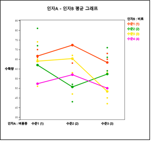
[그림 9.25] 비료와 벼품종별 평균 수확량의 그래프
3) 인자 A, 즉, 벼의 주효과를 검정하는 것은 다음 귀무가설을 검정하는 것이다.
\(\quad \small H_0\) : 세 가지 벼품종에 대한 평균수확량은 같다.
이 귀무가설이 기각되면 ‘벼의 주효과가 있다’라고 말한다. 벼의 주효과를 검정하기 위해서는 일원분산분석에서와 같이 각각의 벼품종에 대한 평균에서 전체평균까지의 거리제곱합을 이용한다.
\(\quad \small {SSA} = 12(61.3-{\overline y}_{\cdot \cdot \cdot})^2 + 12(61.3-{\overline y}_{\cdot \cdot \cdot})^2 + 12(54.8-{\overline y}_{\cdot \cdot \cdot})^2 \) = 342.39
여기서 가중치 12는 각각의 벼에 대한 실험 자료의 개수를 의미한다.
인자 B, 즉, 비료의 주효과를 검정하는 것은 다음 귀무가설을 검정하는 것이다.
\(\quad \small H_0\) : 네 종류 비료의 평균수확량은 같다.
이 귀무가설이 기각되면 ‘비료의 주효과가 있다’라고 말한다. 비료의 주효과를 검정하기 위해서는 각각의 비료에 대한 평균에서 전체평균까지의 거리제곱합을 이용한다.
\(\quad \small {SSB} = 9(67.4 - {\overline y}_{\cdot \cdot \cdot})^2 + 9(56.7 - {\overline y}_{\cdot \cdot \cdot} )^2 + 9(59.2 - {\overline y}_{\cdot \cdot \cdot})^2 + 9(53.1 - {\overline y}_{\cdot \cdot \cdot})^2 \) = 1002.89
여기서 가중치 9는 각각의 비료에 대한 실험 자료의 개수를 의미한다.
벼와 비료의 교호작용 효과(인자 AB라고 표현함)를 검정하는 것은 다음 귀무가설을 검정하는 것이다.
\(\quad \small H_0\) : 벼와 비료 사이에는 교호작용이 없다
이 귀무가설이 기각되면 ‘벼와 비료 사이에는 교호작용 효과가 있다’라고 말한다. 이 검정을 위해서는 각각의 벼와 비료에 대한 평균에서 벼의 평균과 비료의 평균을 뺀 후 전체평균을 더한 거리제곱합을 이용한다.
\(\quad\) \(\small {SSAB} = 3(66.7- {\overline y}_{1 \cdot \cdot} - {\overline y}_{\cdot 1 \cdot} +{\overline y}_{\cdot \cdot \cdot})^2 + 3(72.3- {\overline y}_{1 \cdot \cdot} -{\overline y}_{\cdot 2 \cdot} +{\overline y}_{\cdot \cdot \cdot})^2 + 3(63.3- {\overline y}_{1 \cdot \cdot} - {\overline y}_{\cdot 3 \cdot} +{\overline y}_{\cdot \cdot \cdot})^2 \)
\(\qquad\) \(\small + 3(62.0- {\overline y}_{2 \cdot \cdot} - {\overline y}_{\cdot 1 \cdot} +{\overline y}_{\cdot \cdot \cdot})^2 + 3(50.7- {\overline y}_{2 \cdot \cdot} - {\overline y}_{\cdot 2 \cdot} +{\overline y}_{\cdot \cdot \cdot})^2 + 3(57.3- {\overline y}_{2 \cdot \cdot} -{\overline y}_{\cdot 3 \cdot} +{\overline y}_{\cdot \cdot \cdot})^2 \)
\(\qquad\) \(\small + 3(64.0- {\overline y}_{3 \cdot \cdot} - {\overline y}_{\cdot 1 \cdot} +{\overline y}_{\cdot \cdot \cdot})^2 + 3(65.3- {\overline y}_{3 \cdot \cdot} - {\overline y}_{\cdot 2 \cdot} +{\overline y}_{\cdot \cdot \cdot})^2 + 3(48.3- {\overline y}_{3 \cdot \cdot} - {\overline y}_{\cdot 3 \cdot} +{\overline y}_{\cdot \cdot \cdot})^2 \)
\(\qquad\) \(\small + 3(52.3- {\overline y}_{4 \cdot \cdot} - {\overline y}_{\cdot 1 \cdot} +{\overline y}_{\cdot \cdot \cdot})^2 + 3(57.0- {\overline y}_{4 \cdot \cdot} - {\overline y}_{\cdot 2 \cdot} +{\overline y}_{\cdot \cdot \cdot})^2 + 3(50.0- {\overline y}_{4 \cdot \cdot} -{\overline y}_{\cdot 3 \cdot} +{\overline y}_{\cdot \cdot \cdot})^2 \)
이러한 제곱합을 이용하여 각각의 효과를 바로 검정할 수는 없고 오차제곱합(error sum of squares; SSE)을 이용하여
수정을 하는데 이를 구하기 위해서는 먼저 각각의 자료에서 전체평균까지의 거리의 합인 총제곱합(total sum of squares; SST)을 구한다.
\(\quad \small {SST} = ( 64 -{\overline y}_{\cdot \cdot \cdot})^2 + ( 66 -{\overline y}_{\cdot \cdot \cdot})^2 + ( 70 -{\overline y}_{\cdot \cdot \cdot})^2 + \cdots +
( 53 -{\overline y}_{\cdot \cdot \cdot})^2 + ( 59 -{\overline y}_{\cdot \cdot \cdot})^2 + ( 38 -{\overline y}_{\cdot \cdot \cdot})^2 = 3267.56 \)
수학적으로 이 총제곱합은 다른 제곱합들의 합이 됨을 증명할 수 있다.
\(\quad \small {SST} = SSA + SSB + SSAB + SSE \)
따라서 오차제곱합은 다음과 같다.
\(\quad \small {SSE} = SST - (SSA + SSB + SSAB) \)
만일 각각의 벼나 비료에 대한 수확량이 정규분포를 따르고 또 분산이 같다고 가정할 수 있다면 이들 제곱합을 자유도로 나눈 통계량은
F 분포를 따른다. 따라서 주효과와 교호작용효과는 F 분포를 이용하여 검정할 수 있는데 교호작용효과를 분리할 경우 이것을
먼저 검정한다. 유의수준 5％로 검정한 결과는 다음과 같다.
① 벼품종과 비료에 대한 교호작용효과의 검정
\(\qquad \small F_0 = \frac {MSAB}{MSE} = \frac { \frac{SSAB}{(3-1)(4-1)} } {\frac {SSE}{24}} \) = 1.77
\(\qquad \small F_{6,24; 0.05} \) = 2.51
따라서 교호작용이 있다고 할 수 없고 [그림 9.25]의 평균수확량의 그림에 나타난 교호작용효과는 무시할 수 있을 정도로 작거나,
다른 오차에 기인한 우연한 것일 수 있다고 해석할 수 있다. 『eStat』를 이용하여 \(\small F_0\)에 대한 p-값을 구하면 0.1488 이다.
② 벼품종(A 인자)에 대한 주효과의 검정
\(\qquad \small F_0 = \frac {MSA}{MSE} = \frac { \frac{SSA}{(3-1)} } {\frac {SSE}{24}} \) = 3.08
\(\qquad \small F_{2,24; 0.05} \) = 3.40
따라서 벼품종에 따라 평균수확량이 같다는 귀무가설은 기각하지 못한다. 즉, 벼의 종류에 따라 수확량의 차이가 있다는 충분한
증거가 없다. 『eStat』를 이용하여 \(\small F_0\) = 3.08에 대한 p-값을 구하면 0.0644이다.
③ 비료(B 인자)에 대한 주효과의 검정
\(\qquad \small F_0 = \frac {MSB}{MSE} = \frac { \frac{SSB}{(4-1)} } {\frac {SSE}{24}} \) = 6.02
\(\qquad \small F_{3,24; 0.05} \) = 3.01
따라서 비료의 종류에 따라 평균수확량이 같다는 귀무가설은 기각된다. 즉, 사용한 비료의 종류에 따라 수확량의 차이가 있다.
1)의 검정에서 교호작용효과는 없다고 가정할 수 있으므로 우리는 평균값의 산점도에서 알 수 있듯이 비료종류 1의 사용이
평균적으로 높은 수확량을 준다는 결론을 내릴 수 있다. 『eStat』를 이용하여 \(\small F_0\) = 6.02에 대한 p-값을
구하면 0.0033이다.
표 9.16은 이 자료에 대한 이원분산분석 결과이다.
표 9.16 비료와 벼품종에 따른 수확량의 이원분산분석표
| 요인 |
제곱합 |
자유도 |
평균제곱합 |
F 값 |
p 값 |
| 벼 품종 |
42.3889 |
2 |
171.1944 |
3.0815 |
0.0644 |
| 비료종류 |
1002.8889 |
3 |
334.2963 |
6.0173 |
0.0033 |
| 교호작용 |
588.9444 |
6 |
98.1574 |
1.7668 |
0.1488 |
| 오차 |
1333.3333 |
24 |
55.5556 |
|
|
| 전체 |
3267.5556 |
35 |
|
|
|
4) [그림 9.25] 밑의 이원분산분석 선택사항에서 ‘ANOVA F 검정’ 버튼을 누르면 결과저장창에 각 수준별 조합에 대한 2차원 평균/표준편차표([그림 9.26])와 이원분산분석표([그림 9.27])이 나타난다.
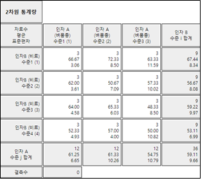
[그림 9.26] 각 수준 조합에 대한 평균/표준편차표
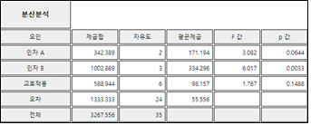
[그림 9.27] 이원분산분석 결과표
다음과 같은『eStatU』 모듈을 이용하여 이원분산분석을 할 수도 있다.
[]